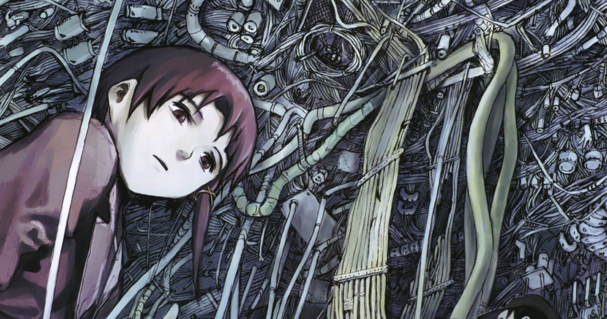
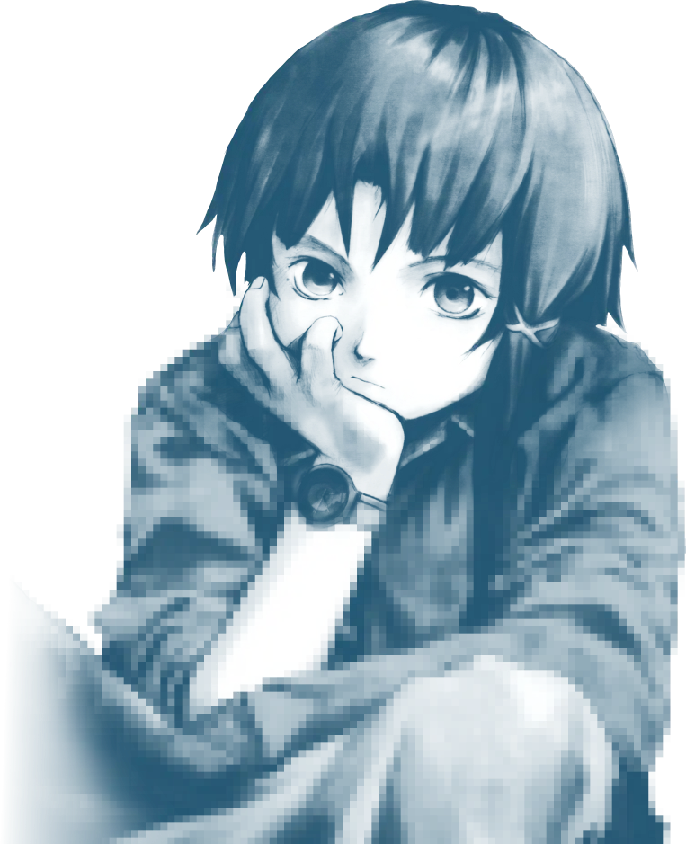
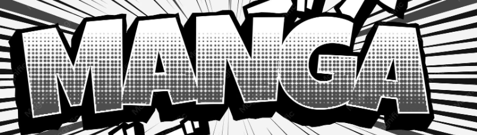

Manga #09
LOVE / GOD COMPLEX / REVENGE


MANGA 09 -d18279
DEPRESSION / MEANING / IDENTITY



Tình yêu hụt, tham vọng làm thần, báo thù, trầm cảm và câu hỏi về mục đích tồn tại. Đây là khu vực tối nhất của kho truyện—đọc xong tự chịu trách nhiệm với tâm trạng.
LOVE / GOD COMPLEX / REVENGE
DEPRESSION / MEANING / IDENTITY